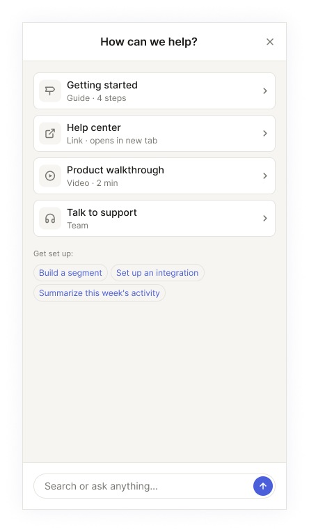
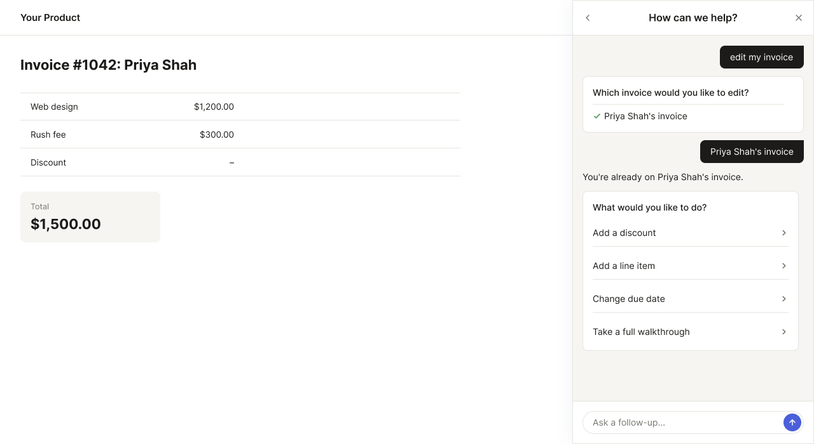
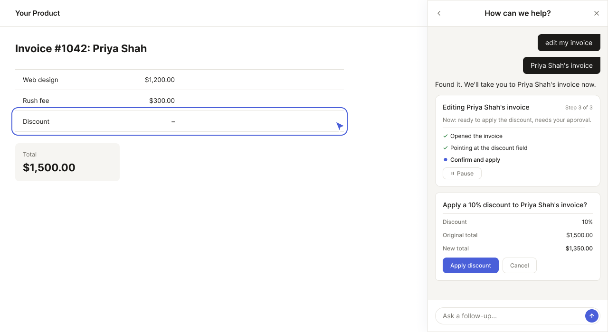
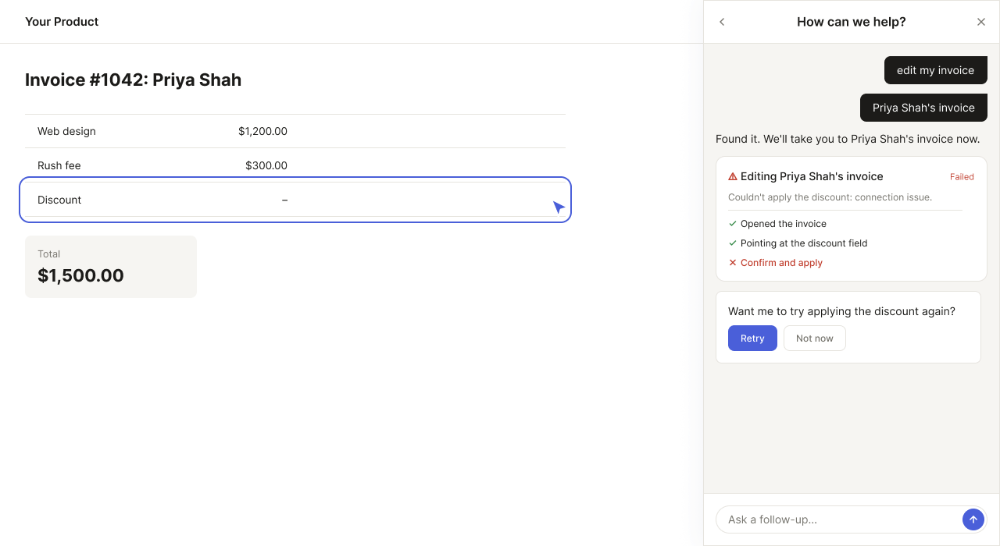

Case study · AI agent product
Designing the human-in-the-loop layer of an AI agent product.
Dubot is an AI-agentic product, born in January 2026. It gives businesses a governance layer between their AI agent and their own end users: an admin panel to control what the agent can do and what context it has. As solo product designer, I design across the whole product, admin panel, editor, and end-user layer alike. This case study zooms in on one piece of that: the end-user experience, from how the agent shows up on the page to what happens when its actions don't go as planned.
The scope
More than a confirmation button.
The end-user experience piece isn't one screen, it's a full surface. Before landing on a docked side panel, I tested it against other formats, a step-by-step wizard, a command-style search bar, through user interviews, and the side panel won because it lets the agent stay present without taking over the page. Beyond the entry point, I also designed how the agent behaves and looks inside a client's product: its tone, its pacing, and the moments where it needs to act directly on the page itself rather than just talk, and how that on-page behavior and the side panel stay in sync instead of feeling like two separate tools.
Closing the panel doesn't mean losing track of what the agent is doing. I designed a persistent status bar that stays visible while the agent is mid-action, showing what's happening and giving the user a way to pause or step back in. I also designed for a case that's increasingly common: a page where another AI is already present, whether that's a headless version of Dubot itself or a separate assistant already embedded in the product, and how the two should coexist without confusing the user about who's doing what.
The problem
An agent that acts without a checkpoint is asking users to trust a black box.
AI agents can now do real things inside a product: create a record, send something, change data. That's useful, but it's also where trust breaks if it's designed carelessly. An end user who watches an agent silently execute has no way to catch a mistake before it's made. Designing the checkpoint that prevents that, without turning every action into a tedious approval chore, is what I've been solving in this part of the Dubot product.
The research
Validated through dozens of interviews.
Before I designed a single screen, I ran structured discovery interviews across a research program spanning dozens of conversations with prospective and pilot customers in different industries, testing a specific hypothesis: that end users need a real, inspectable confirmation step before an agent's action goes live, instead of a generic "AI assistant" chat window with a vague sense that something happened.
I tracked how many of those interviews converged on the same requirement without being prompted toward it. The answer was most of them. People asked, unprompted and before seeing any design, whether the end user would see the result before it went out. Others said plainly that their own customers need to see what's about to happen before it happens, and not just be told that it did. It's a pattern that kept surfacing on its own, independently, across separate conversations with separate companies. That's the real evidence behind this pattern.
The pattern
Ask, gather, and always show the full payload before it fires.
The end-user flow starts wherever the user already is: a prompt box asking what they'd like the agent to do. From there, the agent asks clarifying questions using real UI controls (choices, lookups, short forms) instead of burying everything in chat, so the user is never guessing what's expected of them.


Whatever the agent is about to do, the last step before execution is always the same: a full label/value view of what will happen, editable and cancelable, never just a "Confirm?" button standing in for a decision the user can't actually inspect.

On top of the interview research, another company's CX team designed their own AI-agent confirmation experience from scratch, entirely separately, and landed on close to the same shape. It's a nice bit of outside confirmation, though the interviews above are the real evidence behind this pattern.
Beyond the happy path
Most of the design work is in what happens when things don't go smoothly.
A confirm-and-execute flow is easy to design for the case where everything works. The harder problem is everywhere around it: what the agent says when it can't find a confident answer and declines rather than guesses, what happens when an action needs disambiguation first, or gets blocked outright because an admin restricted it. I designed explicit states for declines, cancellations, execution failures with a retry path, and a walkthrough getting interrupted mid-step, each with its own recovery, not one generic error message standing in for all of them.

Some of that came directly from working closely with an enterprise pilot customer on their specific use case: real interviews with their team, feedback on early versions, and adjustments to fit how their product and their end users actually behaved, not a generic AI-agent scenario worked out in the abstract.
Context
Built fast inside an existing product, designed standalone-first.
Dubot is currently built inside the infrastructure of the company's existing product, for engineering speed, with a standalone product as the long-term goal. I design every flow standalone-first, what's the right experience for this as its own product, and flag it explicitly whenever the current infrastructure forces a compromise, rather than letting temporary constraints quietly become the permanent design.
Outcome
Live today, with the roadmap still unfolding.
Dubot's end-user experience is live and in active development. It's early enough that I'm not sharing specific business metrics or an unreleased roadmap here, so this case study focuses on the design work itself: a full surface, not just a confirmation pattern, grounded in real interview research and a real pilot customer, and held up under real use.
dubot.ai →